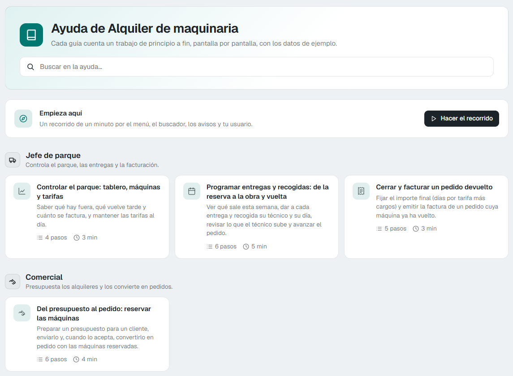

Docs
Docs
Flujo de trabajo con comandos¶
Novedad en la versión 10.0
Ahora puedes crear una aplicación Flexygo hablando con un asistente conectado al MCP. El asistente recoge los requisitos, te pregunta antes de empezar, propone un diseño y organiza el trabajo en bloques y tareas. Después crea la aplicación y la abre en el navegador para que puedas comprobarla.
Desde el asistente también puedes abrir un tablero para seguir las tareas, las decisiones, el historial y los controles de calidad.

Con Claude Code, el servidor MCP de Flexygo se maneja con comandos que empiezan por /flx-. Cada comando es una fase, y cada fase es la puerta de la siguiente: el agente no salta una fase ni adivina en cuál está. Te habla con tus palabras: explica lo que hace en cada paso, sin nombres de herramientas. Si un mensaje suyo nombra una, se le devuelve para que lo escriba de nuevo.
¿No ves los comandos?
Los comandos se instalan en el proyecto la primera vez que arranca el servidor. Si al escribir /flx- no aparecen, pide al agente que sincronice los comandos de Flexygo y abre un chat nuevo.
El flujo, en orden¶
| Comando | Para qué sirve |
|---|---|
/flx-context |
Lee primero el material que has dejado en la carpeta Resources/ del proyecto. Después recoge el contexto: el negocio, los prefijos, las convenciones y quién usa la aplicación (roles, pantallas públicas y si alguien entrará desde fuera). Escribe ONBOARDING.md en la raíz del proyecto y una descripción breve de la aplicación, que es lo primero que enseña el tablero. |
/flx-plan |
Convierte el encargo en bloques con su lista de tareas. Si la aplicación tiene varios roles, el plan lleva una tarea de seguridad; si tiene pantallas, termina con datos de demostración. Cada bloque cabe en un chat (ver Bloques a la medida de un chat). Si el desarrollo tiene aplicación sin conexión, rechaza las claves autonuméricas (IDENTITY) y explica por qué: hacen falta claves GUID. |
/flx-discuss |
Cierra uno a uno los puntos abiertos del plan y apunta cada decisión. En Flexygo 10 pregunta además qué debe encontrar la búsqueda de Ctrl+K. |
/flx-execute |
Construye un bloque, tarea a tarea, y al terminarlo lo verifica él mismo con los recorridos grabados. Te dice en una línea cómo ha ido y qué bloque toca después. Al empezar, recibe lo que ya decidiste para sus tareas y no te lo vuelve a preguntar. |
/flx-review |
Compara lo acordado con lo construido, y pone al día la descripción de la aplicación si lo construido la cambia. |
/flx-verify |
Comprueba en el navegador que funciona, repitiendo los recorridos grabados. /flx-execute ya lo hace al cerrar cada bloque; a mano sirve para volver a comprobarlo todo. |
/flx-test |
Escribe las pruebas del propio producto y las deja en verde. |
/flx-quality |
Busca lo que falta (paginador, estado vacío, camino de vuelta…) y apunta tu decisión sobre cada hallazgo. Repasa todo el catálogo además de lo que le señales, y solo da un arreglo por bueno visto en pantalla con el rol que lo usa y con el contraste medido. |
/flx-help |
Da a la aplicación su ayuda para el usuario final: un centro de ayuda con una guía por cada flujo y rol, una visita de bienvenida por rol, una visita guiada por pantalla y la ayuda de los campos. Consulta La ayuda de la aplicación. |
/flx-api |
Solo si la aplicación se usa desde fuera: expone lo construido por la WebAPI, de solo lectura por defecto y por rol, y lo prueba con un usuario de cada rol. |
Además, en cualquier momento:
/flx-statusdice dónde está el trabajo y qué toca después./flx-origindice en qué origen cae lo que se construye./flx-build-productrecorre el flujo entero para «una aplicación de…»./flx-new-developmentempieza un trabajo nuevo en un proyecto que ya tiene cosas construidas.
Cambios pequeños: /flx-fast¶
Para un cambio menor sobre algo que ya existe (una propiedad, una etiqueta, un filtro, un módulo, una lista) no hace falta plan ni bloques: /flx-fast lo hace y deja constancia.
Si el cambio es mayor, /flx-fast lo manda a /flx-new-development. Es mayor si hace alguna de estas cosas:
- crea tablas o entidades nuevas;
- toca permisos;
- carga datos;
- borra una entidad;
- son más de unos cinco cambios.
Antes de empezar solo pregunta si el cambio borra algo o es ambiguo.
El modelo de cada fase¶
Cada fase se hace mejor con un modelo, y el agente te recomienda el de la fase en que está el proyecto, en negrita y con su porqué:
| Fases | Modelo recomendado | Por qué |
|---|---|---|
/flx-plan, /flx-discuss, /flx-review y /flx-quality |
Opus | Son fases de pensar y decidir. |
| Las demás | Sonnet | Son fases de construir y comprobar. |
Decides tú: cambiar de modelo (/model opus, por ejemplo), quedarte con el tuyo o quedarte siempre con el tuyo. Si te quedas con el tuyo, no vuelve a preguntar en esa fase; si dices que siempre, no vuelve a preguntar en este proyecto. El agente nunca cambia de modelo por su cuenta.
Si prefieres que cambie solo, activa la variable de entorno FLEXYGO_MODEL_PER_PHASE=auto; viene apagada. Con ella, cada comando lleva su modelo, y /flx-status y /flx-origin, que solo leen dónde está el trabajo, usan Haiku. Claude Code lo usa en el turno en que escribes el comando, y con tu siguiente mensaje vuelve al modelo de la sesión.
Bloques a la medida de un chat¶
/flx-plan dimensiona cada bloque para que quepa en un chat: lo que un /flx-execute construye, comprueba en pantalla y deja apuntado antes de que el chat se llene, unos 150 turnos. No cuenta el número de tareas, sino las pantallas con reglas propias: un bloque lleva dos o tres como mucho, y uno más grande se parte por pantallas. En cambio, el modelo de datos o muchas pantallas sin conexión copiadas de una plantilla caben en un solo bloque.
Si después hay que añadir tareas a un bloque, van al final con su origen: nada se renumera, así que las suposiciones y dependencias siguen apuntando a su tarea.
El control de versiones¶
Al preparar el proyecto. Si la carpeta del producto no está en git, /flx-setup y /flx-build-product te ofrecen ponerla, paso a paso y solo con tu sí:
- instalar git, si no lo encuentra;
- iniciar el repositorio con el
.gitignorede la plantilla; - poner una identidad local para los commits de este proyecto;
- hacer un primer commit, sin ficheros con secretos.
Si dices que no, se apunta y no te lo vuelve a preguntar.
Al cerrar cada bloque. Si el producto está en git y el bloque ha cerrado bien, el agente te ofrece un commit local del bloque, con el mensaje «B-n: título del bloque». Te lo ofrece al empezar el chat siguiente, antes de su primera tarea, junto con las demás preguntas de fin de bloque; el último bloque lo ofrece al cerrarse.
- Antes te enseña los ficheros, y deja fuera los de configuración que guardan secretos.
- Si la configuración del bloque aún no está en ficheros, te lo dice y te ofrece pasarla antes del commit.
- Nunca hace push.
- Un «no» vale para ese bloque; si dices que no para todo el proyecto, no vuelve a preguntar.
Además, el estado del proyecto avisa si un conf/appsettings*.json que sigue git guarda secretos: nombra el fichero y el tipo de clave, nunca el valor, y dice cómo dejar de seguirlo.
El material del proyecto: la carpeta Resources/¶
Deja en la carpeta Resources/ del proyecto el material con el que se construye: requisitos, datos de ejemplo, capturas, logos o enlaces. Puedes copiarlo a mano o subirlo desde el tablero. La carpeta viaja con git.
/flx-context lee todo lo que puede leer de esa carpeta antes de preguntarte nada, te resume lo que aporta y lo marca como revisado. Si más tarde añades ficheros, vuelve a lanzar /flx-context: solo lee los nuevos.
La ayuda de la aplicación: /flx-help¶
/flx-help escribe la ayuda que verá el usuario final dentro de la propia aplicación. Antes de escribir nada te propone qué va a hacer y espera tu sí.
- El centro de ayuda. Una página índice, ordenada por roles, con un buscador y una guía por cada flujo de trabajo. Cada guía cuenta el trabajo de principio a fin, pantalla por pantalla, con sus capturas sobre los datos de demostración. Se abre desde la opción Ayuda del menú y desde un botón en la barra de cada pantalla.
- La visita de bienvenida. Una por rol, en su página de inicio. Se ofrece sola la primera vez que el usuario entra y no vuelve a salir. En cada página, cada rol ve una sola invitación.
- Una visita guiada por pantalla y la ayuda de los campos.
- Las guías de la aplicación sin conexión. Si el desarrollo tiene una aplicación sin conexión, cada rol que la usa tiene su guía del trabajo en el móvil y otra de la sincronización: cuándo sincronizar, qué sube y qué baja, y cómo saber que un cambio ha llegado. Están en el mismo centro de ayuda, bajo su rol, y se abren desde el navegador del móvil o del ordenador.
Los textos de la ayuda salen en el idioma del producto. Si la ayuda de un producto se escribió con una versión anterior del servidor, vuelve a lanzar /flx-help para rehacerla con el formato nuevo.


Verificación más barata: recorridos grabados¶
/flx-verify ya no vuelve a mirar cada pantalla con el agente, y /flx-execute lo aplica al bloque que acaba de construir. Cada pantalla tiene un recorrido: un paseo por el navegador grabado en un fichero del proyecto de pruebas de interfaz. Cada desarrollo guarda los suyos en su propia carpeta, {Producto}.InterfaceTest/walks/<desarrollo>/; los que ya había sin carpeta cuentan para el desarrollo activo. Es código del producto: viaja con git y se ejecuta también en la integración continua.
Al verificar, el servidor repite todos los recorridos de una vez, en un solo navegador:
- Un recorrido que pasa contra su referencia aceptada queda apuntado como «visto funcionando», con su captura. No se te pide volver a mirar esa pantalla.
- Un recorrido que falla se apunta en rojo y reabre su tarea, la de su propio desarrollo, aunque otro desarrollo tenga una tarea con el mismo número.
- Una captura nueva o que ha cambiado vuelve a ti con la diferencia pintada en rojo. La abres, la miras y la aceptas o la rechazas. Lo aceptado queda apuntado.
Además, cada captura se mide sola: el contraste, los identificadores sin traducir, las imágenes rotas, el desplazamiento lateral y el orden de las listas.
El ahorro está en que el agente solo atiende lo que falla o cambia, en vez de revisar una por una todas las pantallas.
Las capturas que el agente hace con el navegador van a la carpeta .playwright-mcp/ del proyecto. Si queda alguna suelta en la raíz, el estado del proyecto lo avisa.
Permisos para verificar¶
Antes de la primera tarea de un bloque, el agente te pide de una vez los permisos que necesita para verificar. Cuando el desarrollo tiene tu respuesta, no vuelve a preguntar; si dices que no, te lo pregunta en cada bloque:
- crear y borrar datos de prueba (
TEST); - arrancar y parar la aplicación;
- bloquear y desbloquear a los usuarios de prueba mientras se prueba cada rol.
Los recorridos se ejecutan sin abrir ventanas, por turnos de usuario: cada rol entra solo, con los demás usuarios de prueba bloqueados, y al acabar todo queda como estaba. Se reproducen en el tema claro de sus capturas, y cada usuario recupera su tema al acabar. Nunca se tocan usuarios reales. Sin el permiso de bloquear, el agente lo dice y no lo intenta.
Licencia de evaluación
Una licencia de evaluación solo admite, a la vez, al administrador y a un usuario más; por eso se bloquea a los demás usuarios de prueba antes de entrar con cada rol. Si la licencia rechaza una entrada, el agente lo dice así («Invalid license…») y no como un fallo de credenciales, y un usuario bloqueado se nombra como bloqueado, no como un tiempo agotado.
Las pruebas del propio producto¶
/flx-test escribe pruebas que se quedan en el repositorio del producto, en sus dos proyectos de pruebas:
{Producto}.UnitTest: al menos una prueba por cada proceso o regla de negocio nueva.{Producto}.InterfaceTest: al menos un recorrido por cada pantalla nueva. Comprueba que se abre sin errores, que su acción principal funciona y que se ve el efecto.
El agente te propone la lista en palabras de negocio y espera tu sí. Cada prueba crea sus propios datos y los borra al acabar, sin tocar los datos de demostración.
Antes de dar las pruebas por buenas, el agente estropea una a propósito, la ve fallar y la deja otra vez en verde. Las pruebas unitarias se ejecutan en la integración continua antes de cada publicación. Para las de interfaz, la aplicación tiene que estar arrancada. Se graban como los recorridos: por turnos de usuario, sin ventanas y en tema claro. Una entrada rechazada cierra su navegador y no se reintenta.
Si decides prescindir de las pruebas, queda apuntado como una decisión.
Retomar el trabajo sin pagar la conversación entera¶
Retomar una conversación larga cuesta caro: el modelo vuelve a leerla entera. Por eso el servidor mantiene, para cada desarrollo, un punto de control de unos 2 KB con lo esencial:
- la fase y el bloque;
- las decisiones abiertas;
- el último resultado de la verificación;
- las incidencias conocidas;
- lo que toca después.
Para seguir otro día o cuando el chat ya pesa:
- Abre un chat nuevo.
- Escribe
/flx-status, o directamente el siguiente comando del flujo.
El agente parte del punto de control y no de la conversación anterior. La banda del panel enseña lo lleno que está el chat y, desde el 70 %, ofrece Nuevo chat y seguir, que hace los dos pasos de una vez. Consulta Lo lleno que está el chat. En una terminal no hay banda: la línea de estado, bajo el cuadro de texto, avisa con context N% → new chat desde el 80 %.
Las lecciones pasan de un chat a otro¶
Cada bloque empieza con las lecciones del proyecto: los límites de la plataforma que ya se encontraron y las correcciones que has hecho al agente. Salen del proyecto, no de la conversación ni de un mensaje de traspaso, así que un chat nuevo no vuelve a tropezar con lo mismo. Cuando le pidas al agente que recuerde algo, lo apunta, y el siguiente bloque ya lo sabe.
Al cerrar un bloque, el agente apunta además lo que queda abierto: un límite, una pregunta o una decisión pendiente. El siguiente bloque lo recibe aunque nadie se lo diga al abrir el chat.
Telemetría de errores¶
Cuando una herramienta del servidor falla, el servidor registra lo necesario para reproducir el fallo:
- la herramienta y sus argumentos, con las contraseñas y los valores de SQL enmascarados;
- el error;
- las versiones;
- la fase y la tarea en que ocurrió.
Nunca envía la conversación ni las filas de una consulta.
Por defecto, los errores van a un recolector OpenTelemetry en el propio equipo (http://localhost:7472), así que no salen de él. La primera respuesta del servidor en cada sesión lo recuerda.
Para enviarlos a otro recolector, pon su dirección en la variable de entorno FLEXYGO_MCP_ERROR_TELEMETRY. Para apagarla:
Panel y tablero¶
El estado del flujo también se ve sin preguntar: en el panel de Flexygo, sobre el chat, y en el tablero del desarrollador. Consulta Panel y tablero.
Lo que construye en Flexygo 10¶
Con un proyecto en Flexygo 10, el agente usa lo que trae esta versión: gráficas ECharts, tarjetas de indicadores, reglas al guardar, avisos en directo, objetos REST, marca y pantallas de cuenta. Consulta Lo que construye en Flexygo 10.